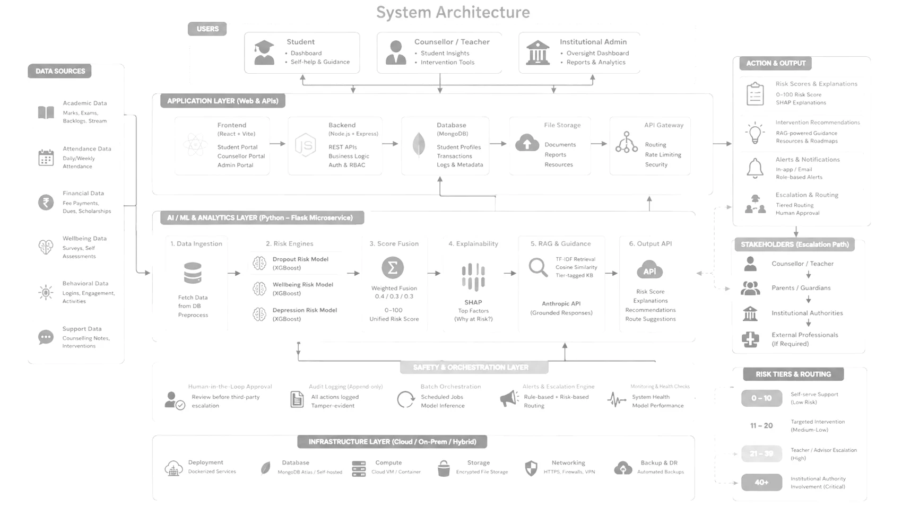
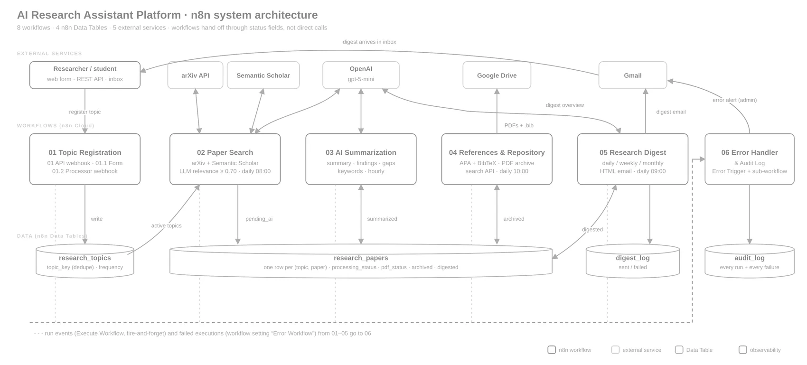
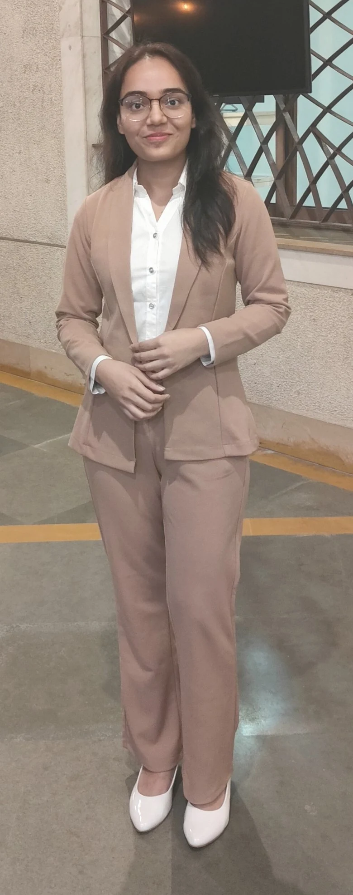

I build machines that read: literature in one project, students in another. I keep a person in the loop wherever the reading is about someone's life.
i
Systems that interpret something on a person's behalf, and hand the decision back.
AI First Hackathon 2026 · I3C IIT Jammu × Techible · second runner-up · team of three
Coaching institutions lose students who were visible for months beforehand: attendance slipping, scores drifting, fees late. Disha reads the signals the institution already collects and raises a flag.
What it does not do is produce a number and call that an answer. Every flag arrives at a counsellor with its reasoning attached, and the counsellor decides what happens next.
AI Research Scientist · IIT Jammu capstone · built solo
Ask a general chatbot for a literature review and it will hand you fluent prose citing papers that do not exist. An assistant you have to fact-check line by line has cost you more time than it saved.
ATHENA's answer is structural. Eight agents run a fixed sequence, each forbidden the next one's job, and a deterministic guardrail rejects any citation whose paper was never retrieved. Fabrication is not discouraged here. It is unavailable.
IIT Jammu capstone · n8n · eight workflows, 114 nodes
Register a topic once. Every morning the system collects new papers from arXiv and Semantic Scholar, discards the ones that merely contain your keyword, summarises what survives, builds the references and emails a digest.
A relevance gate at 0.70 does the filtering, and a dedicated error handler and append-only log record every run and every failure. That is what makes the output trustworthy rather than merely automatic.
Group project of four · 210 pull requests from Flask
A pull request is read by someone who has to decide, quickly, whether this code will still make sense in six months. This reads it first and reports on four things: the identifier names, the inline comments, the commit message, and the tone of the review comments.
I built the data pipeline and the naming module. The pipeline pulls closed pull requests from the Flask repository through the GitHub API and flattens each one into code, commit message and review comments. The naming module reads every function and variable name out of the diff, scores it, and says which ones it would ask you to rename.
ii
Four open threads, and the question each one is asking.
1
Anshika Rana and Rishabh Kaushal · IGDTUW · first author · paper in drafting, results complete
Four literature-search benchmarks each report a winner on their own data. This audit asks whether the winner survives being moved: every protocol run on every dataset, sixteen cells, 114 open-model runs.
It mostly does not. The protocol, not the query, drives recall.
5 → 98 percent recall · outline = native pairing
iii
Where the toolkit came from, and then what it was pointed at.
iv
Eight semesters, left to right. Click any course for its syllabus and the lab work I did inside it.
I'm a prospective Master's student interested in the fields of cognitive sciences and artificial intelligence, currently pursuing a Bachelor of Technology in Computer Science Engineering and Artificial Intelligence.
Resume anshikaranaa.114@gmail.com github.com/AnshikaRana LinkedIn